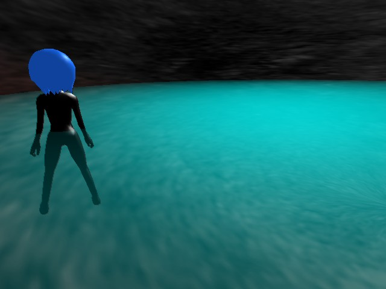

サンプルプログラム 厚さによって透明度が変化する水の表現 ( 要プログラマブルシェーダー２．０ )

視線方向の水面から地面の距離が長いほど水の色が濃くなる( 透明度が低くなる )処理のサンプルプログラムです。
手順としては、被写界深度処理の処理のようにまずシーンの深度( カメラから描画ピクセルまでの距離 )
を描画可能画像に描画して、その後水面以外を普通に描画した後、水面を深度の画像を使用して描画します。
このとき、深度画像の深度から水面の深度を引き算して水面から地面( 若しくはキャラクター )までの距離を算出し、
その値を元に透明度を決定します。
こうすることで厚みのある半透明なものを表現することができます。
プログラムの実行に必要なファイルのセットはこちらにあります。
Ｃ＋＋のプログラム
剛体メッシュ用の深度描画に使用する頂点シェーダー
スキニングメッシュ用の深度描画に使用する頂点シェーダー
深度描画用のピクセルシェーダープログラム
厚みによって透明度が変化する水処理用の頂点シェーダープログラム
厚みによって透明度が変化する水処理用のピクセルシェーダープログラム
戻る